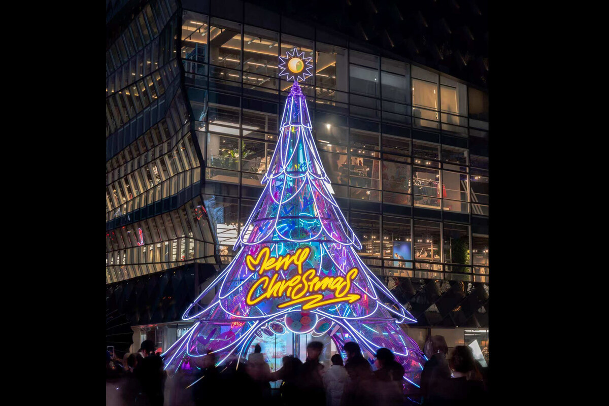

- Led large-scale brand exhibitions and art installations from concept proposals, content planning and client reporting to execution.
- 主导多个大型品牌授权与艺术家合作项目，包含从概念提案、内容规划、客户汇报到整体执行。
- Developed full visual systems including key visuals, wayfinding, social media graphics, on-site materials and limited-edition premiums.
- 开发展览及品牌活动的全套视觉系统，包括主视觉、导视系统、社交媒体传播图、现场物料与限量纪念品。
- Managed timelines, budgets, supplier plans and feedback loops to keep project delivery efficient.
- 管理项目进度与预算，输出执行排期、供应商对接方案及客户反馈机制，确保关键节点落地。
